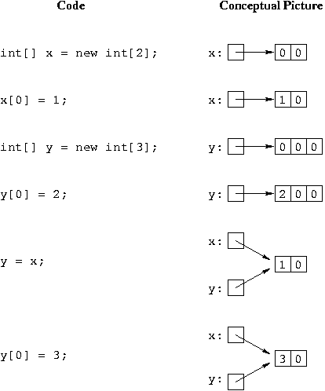
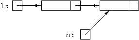
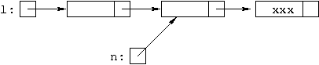

Question 1: L.getNext().setData("cat");
Question 2: L.setNext( new Listnode("rat", L.getNext()) );
The list begins:

and after the code looks like:

and this is correct.
Here's the code for the add method that adds to the end of the list.
//**********************************************************************
// add
//
// Given: E d
//
// Do: Add d to the end of the list
//
// Implementation:
// o create a new Listnode for d, pointed to by the "next" field
// of the last node in the list (which will be the header node if
// the list is empty)
// o change the lastNode pointer to point to the new node
// o increment numItems.
//
//**********************************************************************
public void add(E d) {
lastNode.setNext(new Listnode<E>(d));
lastNode = lastNode.getNext();
numItems++;
}
Here's the code for the add method that adds at a given position.
//**********************************************************************
// add
//
// Given: int pos and E d
//
// Do: Throw an exception if pos has a bad value.
// Otherwise, add d to the list at position pos (counting from zero)
//
// Implementation:
// Check for a bad position and if so, throw an exception.
// Otherwise:
// If we're being asked to add to the end of the list,
// call the "add to the end" method (that way we don't need
// to worry about updating the lastNode pointer). Otherwise:
//
// o find the node n in position pos-1 (counting the header
// node as being in position -1)
//
// o create a new Listnode for d, whose next field points to the
// node after n and set n's "next" field to point to the new node
//
//**********************************************************************
public void add(int pos, E d) {
// check for bad position
if (pos < 0 || pos > numItems) {
throw new IndexOutOfBoundsException();
}
// if asked to add to end, let the other add method do the work
if (pos == numItems) {
add(d);
return;
}
// find the node n after which to add a new node and add the new node
Listnode<E> n = items;
for (int k = 0; k < pos; k++) {
n = n.getNext();
}
n.setNext(new Listnode<E>(d, n.getNext()));
numItems++;
}
Here's the code for the constructor.
//**********************************************************************
// LinkedList
//
// constructor for the LinkedList class
//
// Do: Initialize the list to be empty (i.e., initialize the
// linked list to have just a header node, pointed to by
// both pointer fields, and initialize numitems to zero).
//
//**********************************************************************
public LinkedList() {
items = lastNode = new Listnode<E>(null);
numItems = 0;
}| operation | linked list | array |
|---|---|---|
|
remove first |
O(1) |
O(N) |
|
remove last |
O(N) |
O(1) |
For linked list: To remove the first item from a list (with a header node) you only have to do L.setNext(L.getNext().getNext()), and this is O(1). To remove the last node you must traverse the list from the first node to get to the next-to-last node to do the delete, so this is O(N), where N is the size of the list.
For arrays: To remove the first item you must shift all the remaining items one position to the left to fill in the hole so this is O(N). To remove the last item there are no shifts because no items are to the right, so this is O(1).
// Note: this code has excessive comments to help you understand it in detail.
// Returns true if val is in circular linked list l; otherwise returns false
if (l == null) {
return false; // no items in list so not found
if (l.getData().equals(val))
return true; // val is in the first node in the list
Listnode<E> tmp = l.getNext();
while (tmp != l) { // stops from going past first node and going in circles
if (tmp.getData().equals(val))
return true; // found val at this node
tmp = tmp.getNext();
}
return false; // did not find val in list
// Adds object "o" to the end of the list pointed to by "last"
public void addLast(Listnode<E> last, E o) {
Listnode<E> tmp = new Listnode<E>(o);
if (last == null) {
tmp.setNext(tmp);
} else {
tmp.setNext(last.getLast());
last.setNext(tmp);
}
last = tmp;
}
// Adds object "o" to the start of the list pointed to by "last"
public void addFirst(Listnode<E> last, E o) {
addLast(last, o);
last = last.getNext();
}
// Removes the first node from the list pointed to by "last"
public void removeFirst(Listnode<E> last) {
if (last == null) {
throw new IndexOutOfBoundsException(
"attempt to remove from empty list");
}
if (last.getNext() == last) {
// one-node list
last = null;
} else {
last.setNext(last.getNext().getNext());
}
}